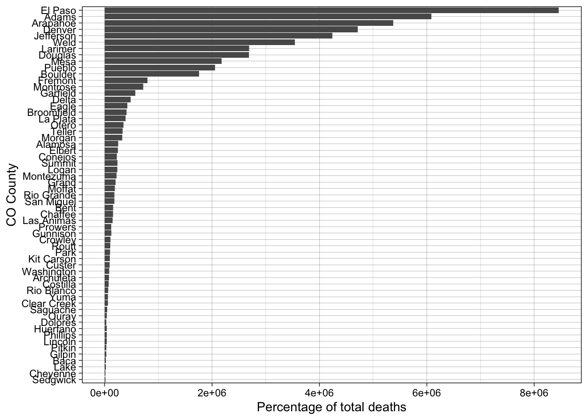
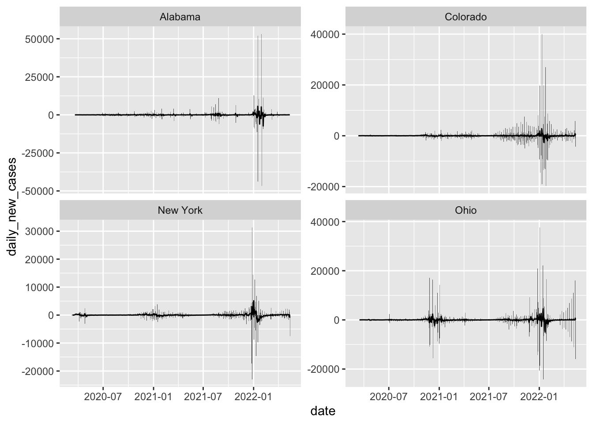
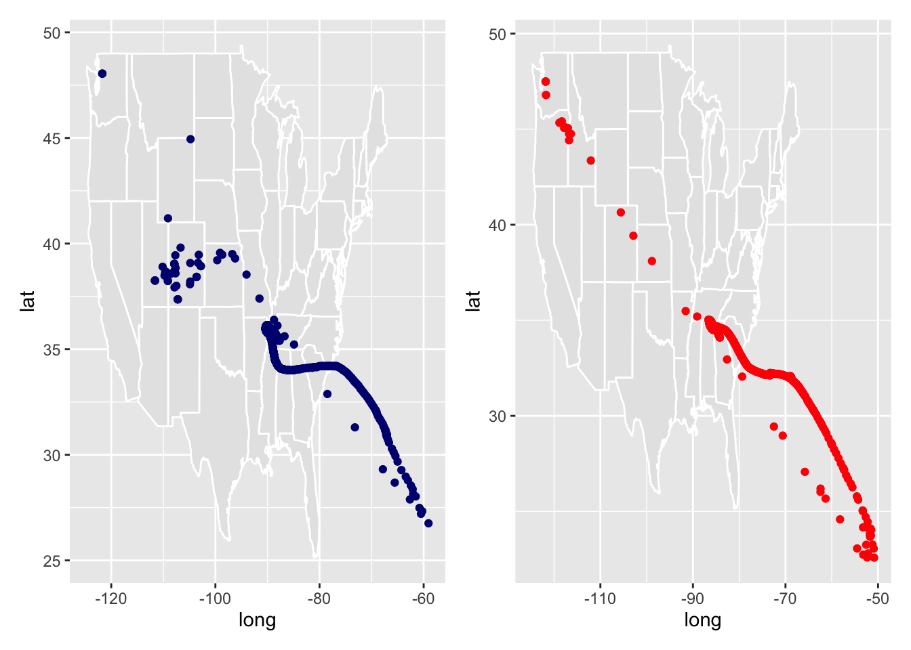

── Attaching core tidyverse packages ──────────────────────── tidyverse 2.0.0 ──
✔ dplyr 1.1.4 ✔ readr 2.1.3
✔ forcats 1.0.0 ✔ stringr 1.5.0
✔ ggplot2 3.5.1 ✔ tibble 3.2.1
✔ lubridate 1.9.3 ✔ tidyr 1.3.0
✔ purrr 1.0.1
── Conflicts ────────────────────────────────────────── tidyverse_conflicts() ──
✖ dplyr::filter() masks stats::filter()
✖ dplyr::lag() masks stats::lag()
ℹ Use the conflicted package (<http://conflicted.r-lib.org/>) to force all conflicts to become errors
library(flextable)
Attaching package: 'flextable'
The following object is masked from 'package:purrr':
compose
library(zoo)
Attaching package: 'zoo'
The following objects are masked from 'package:base':
as.Date, as.Date.numeric
library(lubridate)library(patchwork)
# Load in the datadata <-read_csv('https://raw.githubusercontent.com/nytimes/covid-19-data/master/us-counties.csv')
Rows: 2502832 Columns: 6
── Column specification ────────────────────────────────────────────────────────
Delimiter: ","
chr (3): county, state, fips
dbl (2): cases, deaths
date (1): date
ℹ Use `spec()` to retrieve the full column specification for this data.
ℹ Specify the column types or set `show_col_types = FALSE` to quiet this message.
# my datamy.date <-as.Date("2022-02-01")my.state <-"Colorado"
Analysis
data_2 <- data %>%group_by(fips) %>%mutate(new_cases =pmax(0, cases -lag(cases, n =1)),new_deaths =pmax(cases -lag(cases, n=1)) ) %>%drop_na() %>%ungroup()data_clean <- data_2 %>%filter(state == my.state) %>%group_by(county) %>%mutate(new_cases = cases -lag(cases, n =1),new_deaths = deaths -lag(deaths, n =1)) %>%drop_na() %>%ungroup()
Question 1
Create two tables one with most cummulative cases on specific day
today_data <-filter(data_clean, date == my.date)# Top 5 counties cummulative casesslice_max(today_data, n =5, order_by = cases) %>%select(county, cases) %>%flextable() %>%set_caption("Top 5 counties with cummulative cases")
county
cases
El Paso
170,673
Denver
159,022
Arapahoe
144,255
Adams
126,768
Jefferson
113,240
# top 5 counties by new casesslice_max(today_data, n =5, order_by = new_cases) %>%select(county, state, new_cases) %>%flextable() %>%set_caption("Top 5 counties by new cases on Feb 1, 2022")
cd <-read_csv(pop_url) %>%filter(COUNTY !="000") %>%mutate(fips =paste0(STATE, COUNTY)) %>%select(STNAME, COUNTY, fips, contains("2021"))
Rows: 3195 Columns: 67
── Column specification ────────────────────────────────────────────────────────
Delimiter: ","
chr (5): SUMLEV, STATE, COUNTY, STNAME, CTYNAME
dbl (62): REGION, DIVISION, ESTIMATESBASE2020, POPESTIMATE2020, POPESTIMATE2...
ℹ Use `spec()` to retrieve the full column specification for this data.
ℹ Specify the column types or set `show_col_types = FALSE` to quiet this message.
Question 3
# Join the pop data to covid datacovid_pop <-inner_join(data_clean, cd, by ="fips")CO_data <- covid_pop %>%mutate(case_per_capita = cases / POPESTIMATE2021,new_per_capita = new_cases / POPESTIMATE2021,new_deaths_per_capita = new_deaths / POPESTIMATE2021, )CO_today <- CO_data %>%filter(date == my.date)# Cummulative cases per capitaslice_max(CO_today, n=5, order_by = case_per_capita) %>%select(county, case_per_capita) %>%flextable() %>%set_caption("Top 5 counties in Colorado with most cummulative cases per capita")
county
case_per_capita
Crowley
0.5117698
Bent
0.4118749
Pitkin
0.3429659
Lincoln
0.3424082
Logan
0.3047701
# New cases per capitaslice_max(CO_today, n =5, order_by = new_per_capita) %>%select(county, new_per_capita) %>%flextable() %>%set_caption("Top 5 Colorado counties with the most new cases of COVID 19 per capita")
county
new_per_capita
Crowley
0.009764603
Bent
0.004120622
Sedgwick
0.003869304
Washington
0.002875924
Las Animas
0.002651039
Question 4
Rolling Thresholds
# Filter merged covid/population data for Colorado to only include the last 14 days.CO_data_14_days <- CO_data %>%filter(date >= (max(my.date)-14))# Group by county & summarizeCO_data_14_days <- CO_data_14_days %>%group_by(county) %>%summarize(total_new_cases =sum(new_cases),population = POPESTIMATE2021[1]) %>%mutate(cases_per_100k = (total_new_cases / population) *100000)# Create tables# top 5 counties, cases per 100k peopleslice_max(CO_data_14_days, n =5, order_by = cases_per_100k) %>%select(county, cases_per_100k) %>%flextable() %>%set_caption("Top 5 cases per 100k people in each county in Colorado")
county
cases_per_100k
Crowley
12,659.111
Lincoln
9,702.174
Bent
9,664.731
Fremont
7,937.120
Logan
7,907.265
Question 5
Death toll
# Filter for 2021 & find total deaths in 2021CO_covid_2021 <- CO_data %>%filter(year(date) ==2021) %>%group_by(county) %>%summarize(total_covid_deaths =sum(new_deaths)) %>%ungroup() # Join CO_covid_deaths with census dataCO_covid_2021 <- CO_covid_2021 %>%left_join(CO_data %>%select(county, RDEATH2021), by ="county")# Percentage of covid deathsCO_covid_2021 <- CO_covid_2021 %>%mutate(covid_death_ratio = (total_covid_deaths / RDEATH2021) *100)# High Covid Countieshigh_covid_death <- CO_covid_2021 %>%filter(covid_death_ratio >=20)# Plothigh_covid_death %>%ggplot(aes(x =reorder(county, covid_death_ratio), y = covid_death_ratio))+geom_col()+coord_flip()+labs(y ="Percentage of total deaths",x ="CO County" )+theme_linedraw()

Question 6
Multi-state
# Filter for the states we need & get daily new cases with rolling meanmulti_state <- data_2 %>%group_by(state, date) %>%summarize(daily_new_cases =sum(new_cases, na.rm =TRUE)) %>%ungroup() %>%filter(state %in%c("New York" , "Colorado", "Alabama", "Ohio")) %>%arrange(state, date) %>%group_by(state) %>%mutate(daily_new_cases = daily_new_cases -lag(daily_new_cases, default =0),rolling_mean =rollmean(daily_new_cases, 7, fill =NA, align ="right") ) %>%ungroup()
`summarise()` has grouped output by 'state'. You can override using the
`.groups` argument.
# Plot daily new cases with rolling meanmulti_state %>%ggplot(aes(x = date, y = daily_new_cases))+geom_col()+geom_line(aes(y = rolling_mean))+facet_wrap(~ state, scales ="free_y")
Warning: Removed 6 rows containing missing values or values outside the scale range
(`geom_line()`).

Join with the population data
cd_2 <- cd %>%mutate(state = STNAME)multi_state_per_capita <- multi_state %>%left_join(cd_2, by ="state") %>%mutate(cases_per_capita = (daily_new_cases / POPESTIMATE2021) *100000,rolling_mean_per_capita =rollmean(cases_per_capita, 7, fill =NA, align ="right") )
Warning in left_join(., cd_2, by = "state"): Detected an unexpected many-to-many relationship between `x` and `y`.
ℹ Row 1 of `x` matches multiple rows in `y`.
ℹ Row 1 of `y` matches multiple rows in `x`.
ℹ If a many-to-many relationship is expected, set `relationship =
"many-to-many"` to silence this warning.
# Plotmulti_state_per_capita %>%ggplot(aes(x = date, y = rolling_mean_per_capita, color = state))+geom_line()
Warning: Removed 6 rows containing missing values or values outside the scale range
(`geom_line()`).
Rows: 3221 Columns: 3
── Column specification ────────────────────────────────────────────────────────
Delimiter: ","
chr (1): fips
dbl (2): LON, LAT
ℹ Use `spec()` to retrieve the full column specification for this data.
ℹ Specify the column types or set `show_col_types = FALSE` to quiet this message.
# Join with raw covid dataCovid_spread <- data %>%left_join(location_data, by ="fips")# Mean centerCovid_spread <- Covid_spread %>%group_by(date) %>%summarize(wm_x_cases =sum(LON * cases, na.rm =TRUE) /sum(cases, na.rm =TRUE),wm_y_cases =sum(LAT * cases, na.rm =TRUE) /sum(cases, na.rm =TRUE),wm_x_deaths =sum(LON * deaths, na.rm =TRUE) /sum(deaths, na.rm =TRUE),wm_y_deaths =sum(LAT * deaths, na.rm =TRUE) /sum(deaths, na.rm =TRUE)) %>%arrange(date)
Warning: Removed 39 rows containing missing values or values outside the scale range
(`geom_point()`).

Question 8
Trends
# Start with raw covid datatrend_data <- data_2 %>%left_join(cd, by ="fips") %>%mutate(year =year(date),month =month(date),season =case_when( month %in%3:5~"spring", month %in%6:8~"summer", month %in%9:11~"fall", month %in%c(12, 1, 2) ~"winter" ) )# Group data by state, year and season then summarize the total population, new cases, and new deathstrend_data2 <- trend_data %>%group_by(state, year, season) %>%mutate(new_cases =pmax(cases -lag(cases, n =1)),new_deaths =pmax(deaths -lag(deaths, n=1)) ) %>%summarize(total_population =sum(POPESTIMATE2021),cases =sum(new_cases, na.rm =TRUE),deaths =sum(new_deaths, na.rm =TRUE) ) %>%ungroup() %>%filter(!is.na(cases), !is.na(deaths), !is.na(total_population)) %>%mutate(scale_d =log(deaths+1),scale_c =log(cases+1),scale_p =log(total_population +1) ) %>%drop_na()
`summarise()` has grouped output by 'state', 'year'. You can override using the
`.groups` argument.
Warning: There were 2 warnings in `mutate()`.
The first warning was:
ℹ In argument: `scale_d = log(deaths + 1)`.
Caused by warning in `log()`:
! NaNs produced
ℹ Run `dplyr::last_dplyr_warnings()` to see the 1 remaining warning.
Model Building
# Build a linear modellinear_model <-lm(scale_c ~ scale_d * scale_p + season, data = trend_data2)# Summarize the modelsummary(linear_model)
Call:
lm(formula = scale_c ~ scale_d * scale_p + season, data = trend_data2)
Residuals:
Min 1Q Median 3Q Max
-3.4502 -0.5058 0.0241 0.5197 3.6676
Coefficients:
Estimate Std. Error t value Pr(>|t|)
(Intercept) 6.05724 2.15374 2.812 0.005255 **
scale_d 1.60711 0.55444 2.899 0.004036 **
scale_p -0.11423 0.11069 -1.032 0.302961
seasonspring -0.60753 0.16207 -3.749 0.000215 ***
seasonsummer -0.05948 0.17854 -0.333 0.739262
seasonwinter 0.01954 0.16820 0.116 0.907579
scale_d:scale_p -0.02523 0.02830 -0.892 0.373398
---
Signif. codes: 0 '***' 0.001 '**' 0.01 '*' 0.05 '.' 0.1 ' ' 1
Residual standard error: 0.9561 on 288 degrees of freedom
Multiple R-squared: 0.8531, Adjusted R-squared: 0.8501
F-statistic: 278.8 on 6 and 288 DF, p-value: < 2.2e-16
Question 9
Evaluation
a <- broom::augment(linear_model, new_data = trend_data)ggplot(a, aes(x = scale_c, y = .fitted))+geom_point()+geom_smooth(method ="lm")+geom_abline(col ="red")+labs(x ="cases",y ="Predicted" )